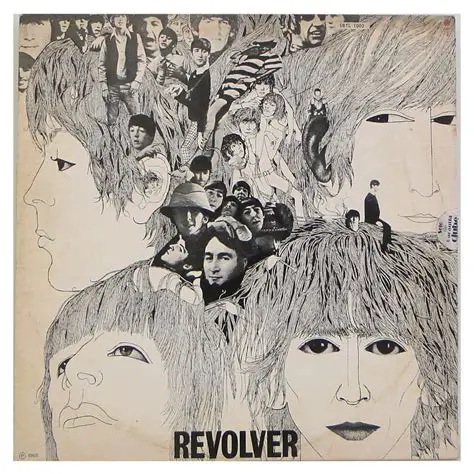
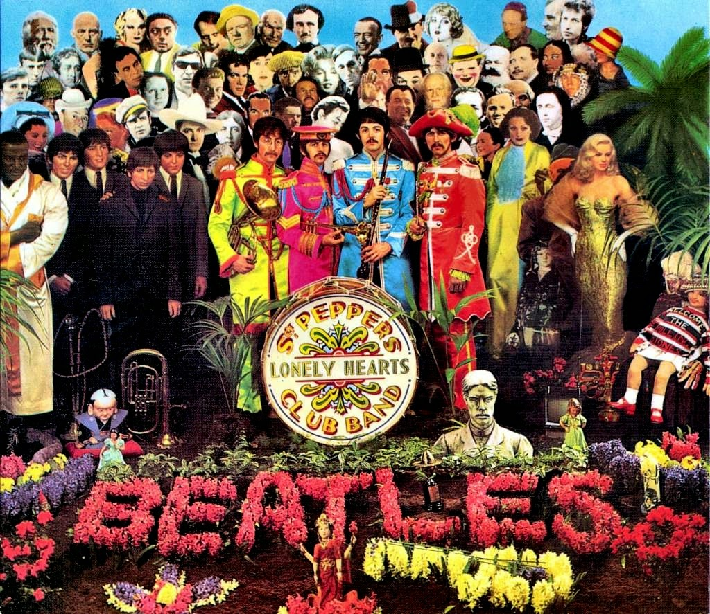
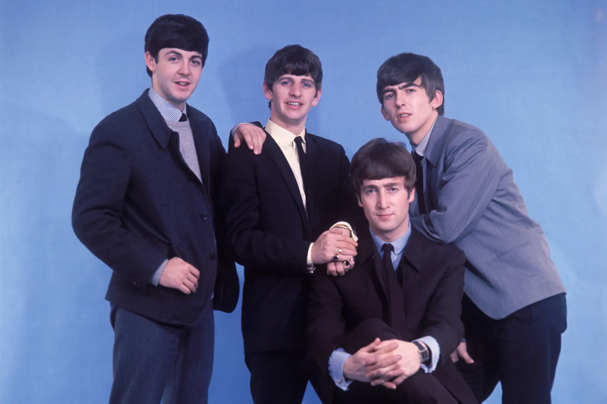
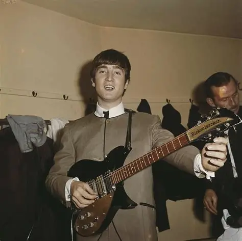
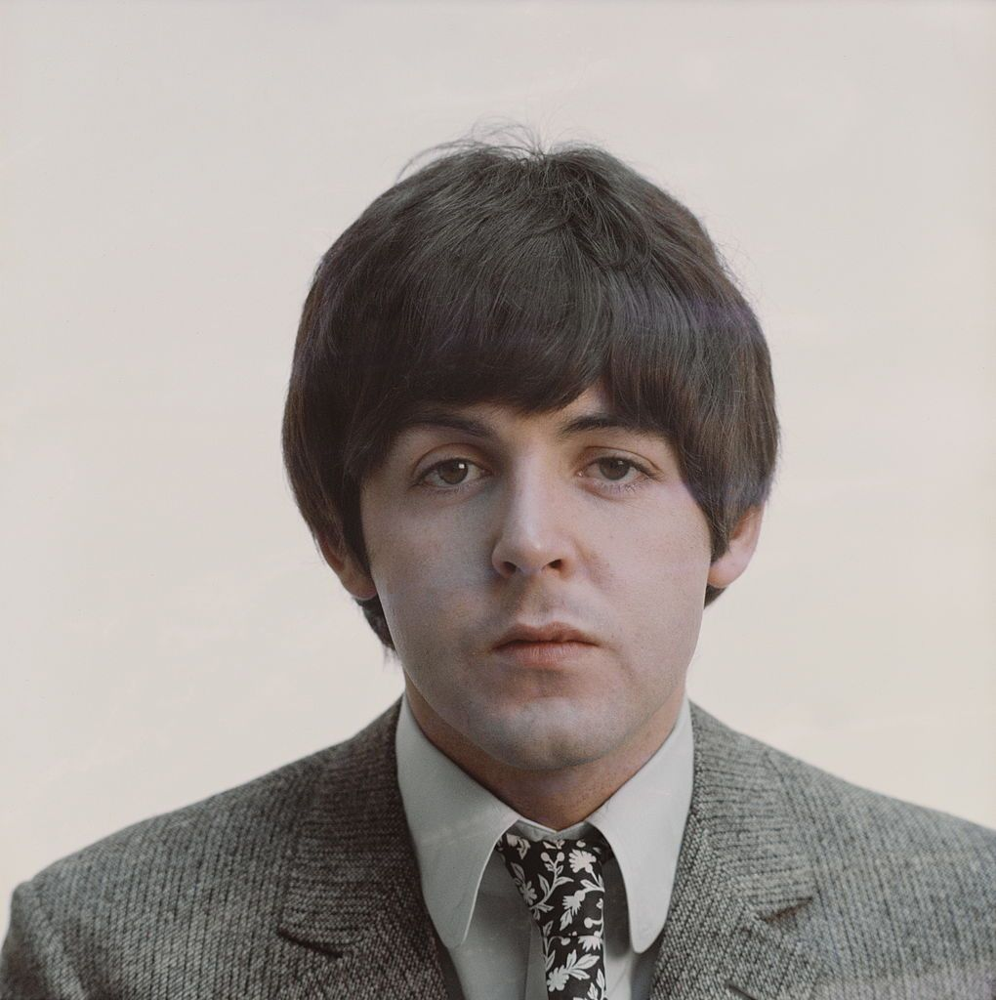
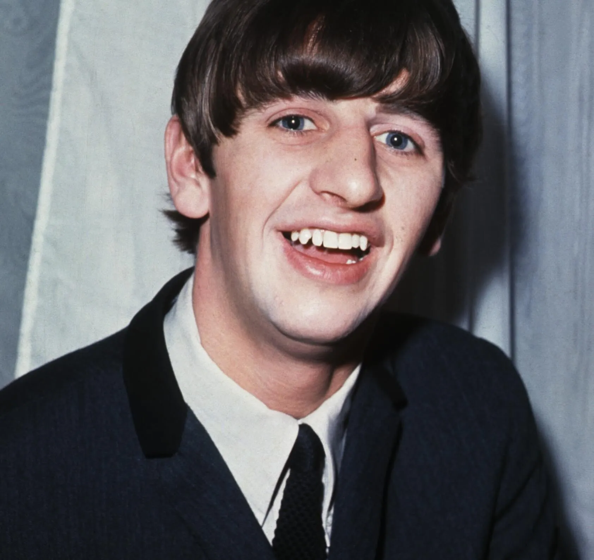

Abbey Road

Revolver

Rubber Soul

Sgt. Pepper's Lonely Hearts Club Band

Os Beatles foram uma lendária banda de rock formada em Liverpool no ano de 1960 por John Lennon, Paul McCartney, George Harrison e Ringo Starr, tornando-se o grupo musical mais influente e bem-sucedido da história da música popular. O grupo começou tocando rock and roll tradicional e gerou um fenômeno global de histeria entre os fãs conhecido como Beatlemania, além de liderar a famosa Invasão Britânica nos Estados Unidos a partir de 1964. Ao longo da década, a banda passou por uma revolução artística impressionante, deixando os shows ao vivo para se concentrar em inovações de estúdio, pioneirismo no rock psicodélico e no desenvolvimento de álbuns conceituais. Essa evolução é marcada por discos fundamentais como Rubber Soul (1965), que trouxe composições mais maduras; Revolver (1966), com seus experimentos sonoros; Sgt. Pepper's Lonely Hearts Club Band (1967), um marco cultural e visual; o eclético Álbum Branco (1968); e o aclamado Abbey Road (1969), que consagrou a reta final de sua produção. Em 1970, os Beatles anunciaram o fim do grupo, mas o legado coletivo e as subsequentes carreiras solo de seus integrantes transformaram para sempre a produção musical, a cultura pop e a indústria fonográfica global.

John Lennon

Paul McCartney
George Harrison

Ringo Starr
Abbey Road

Revolver
Rubber Soul

Sgt. Pepper's Lonely Hearts Club Band